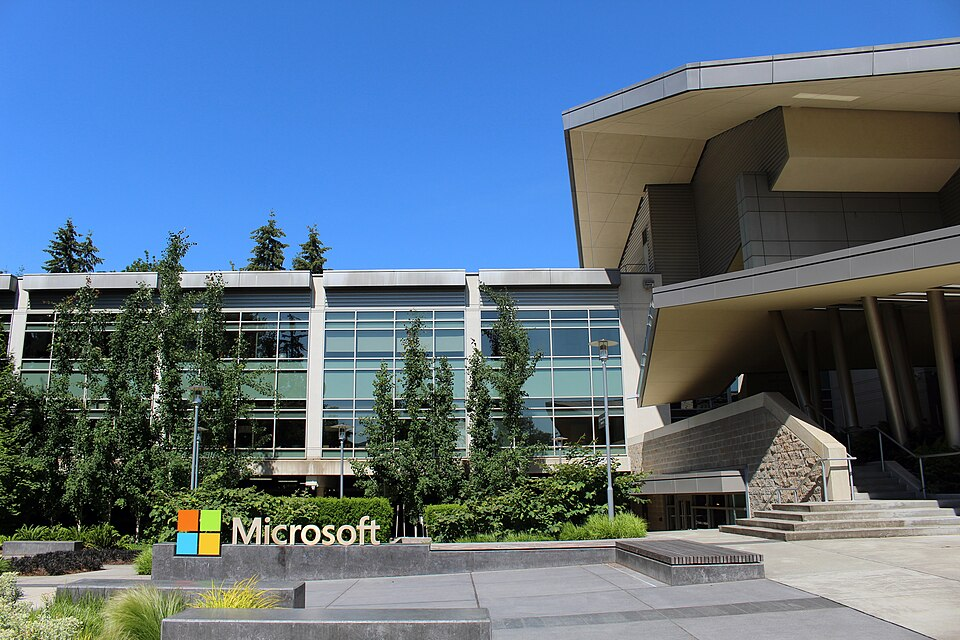
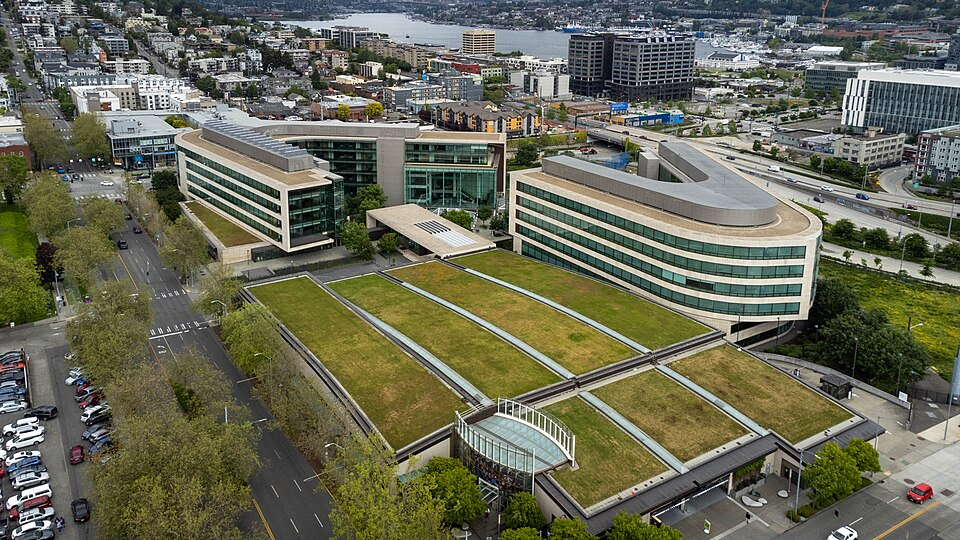
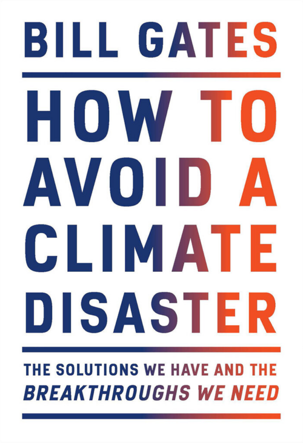
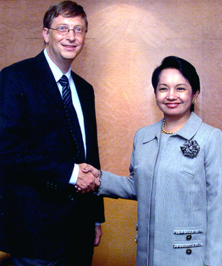
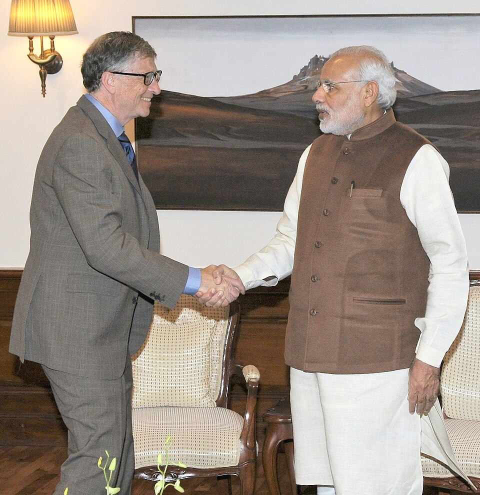
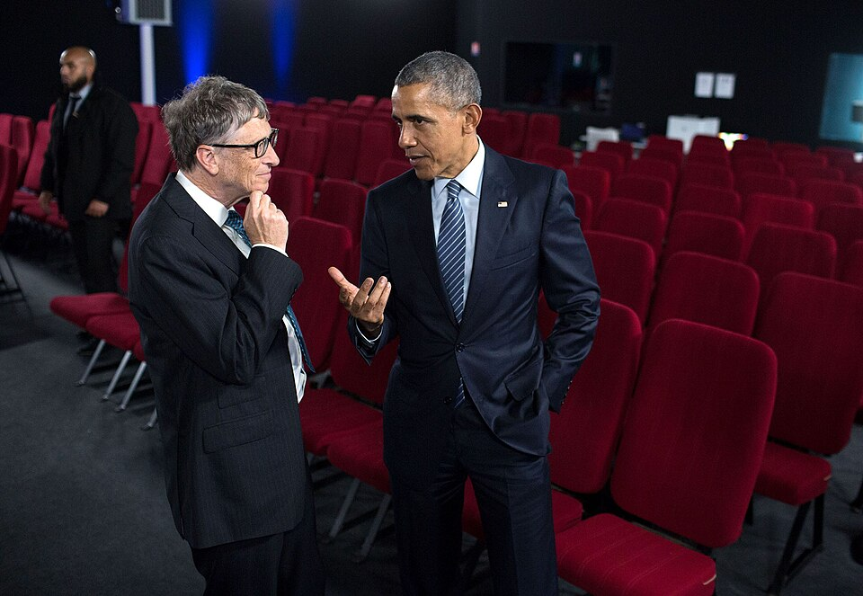

Perjalanan saya dimulai dari ketertarikan terhadap komputer. Bersama Paul Allen, saya kemudian mendirikan Microsoft. Hari ini saya masih terus belajar bagaimana teknologi dapat membantu menyelesaikan berbagai masalah dunia.
Microsoft didirikan
Memimpin sebagai CEO
Diterbitkan sejak 1995
Awal Gates Foundation
Sedikit cerita mengenai perjalanan saya.
William Henry Gates III lahir di Seattle, Washington pada 28 Oktober 1955. Saya mulai menulis program pada usia 13 tahun, sebuah permainan tic-tac-toe dalam bahasa BASIC, setelah sekolah saya membeli waktu komputer dari sebuah mesin General Electric.
Pada 1975 saya keluar dari Harvard dan mendirikan Microsoft bersama Paul Allen. Saya memimpin perusahaan itu sebagai CEO selama 25 tahun, lalu perlahan berpindah ke pekerjaan filantropi lewat Gates Foundation1.
Fokus terbesar saya hari ini adalah menurunkan emisi
CO2 hingga nol bersih serta memberantas penyakit
menular seperti polio, malaria, dan tuberkulosis. Perkiraan
kekayaan saya pernah dilaporkan US$130 miliar dan kini
tercatat sekitar
US$106,5 miliar2.
Seluruh data pada halaman ini dikutip dari sumber publik dan dipakai untuk keperluan latihan Praktikum Modul 1.
Beberapa bagian penting dalam perjalanan hidup saya.
Teknologi bukan satu-satunya hal yang menarik perhatian saya.

Komputer mengubah hidup saya. Sampai sekarang saya tetap tertarik melihat bagaimana teknologi baru bisa mengubah cara kita hidup dan bekerja. Dari penjual interpreter BASIC, Microsoft tumbuh menjadi penentu standar sistem operasi komputer pribadi di seluruh dunia.

Banyak masalah kesehatan sebenarnya bisa dicegah. Tantangannya adalah membuat solusi itu menjangkau semua orang.

Dunia membutuhkan energi yang lebih bersih tanpa menghentikan kemajuan.
Buku yang saya tulis sejak 1995.
| Tahun | Judul | Topik | Catatan |
|---|---|---|---|
| 1995 | The Road Ahead | Teknologi | Visi awal tentang jalan raya informasi |
| 1999 | Business @ the Speed of Thought | Bisnis | Peran teknologi dalam dunia usaha |
| 2021 | How to Avoid a Climate Disaster | Iklim | Jalan menuju nol emisi bersih |
| 2022 | How to Prevent the Next Pandemic | Kesehatan | Pelajaran dari pandemi COVID-19 |
| 2025 | Source Code: My Beginnings | Memoar | Bagian pertama dari rencana tiga buku |
Beberapa momen yang menjadi bagian dari perjalanan ini.

Penghargaan atas kontribusi Bill Gates dan Microsoft terhadap perkembangan teknologi komputer pribadi.

Salah satu penghargaan sipil tertinggi India, diberikan atas kontribusinya dalam bidang sosial.

Salah satu penghargaan sipil tertinggi Amerika Serikat, diberikan kepada Bill dan Melinda Gates.
Ajukan undangan, kerja sama, atau pertanyaan.
Lihat pendidikan, pengalaman, kemampuan, dan penghargaan saya pada halaman CV.
Buka CV Saya →